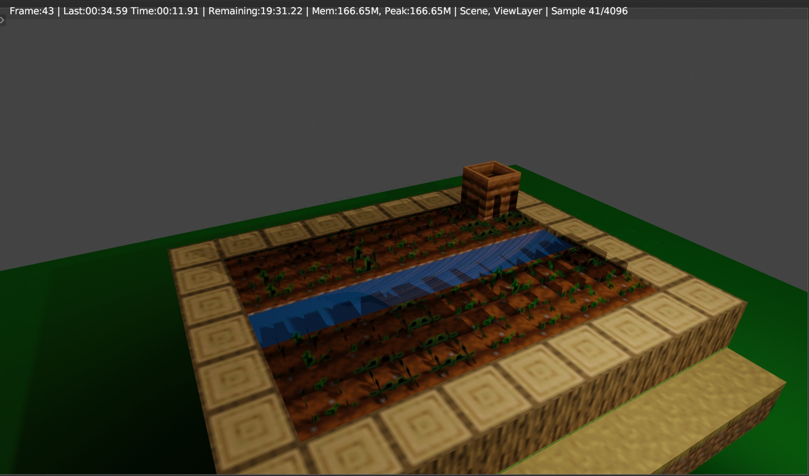
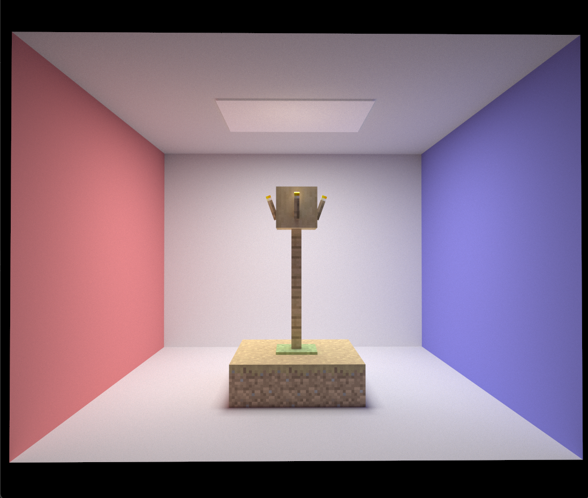
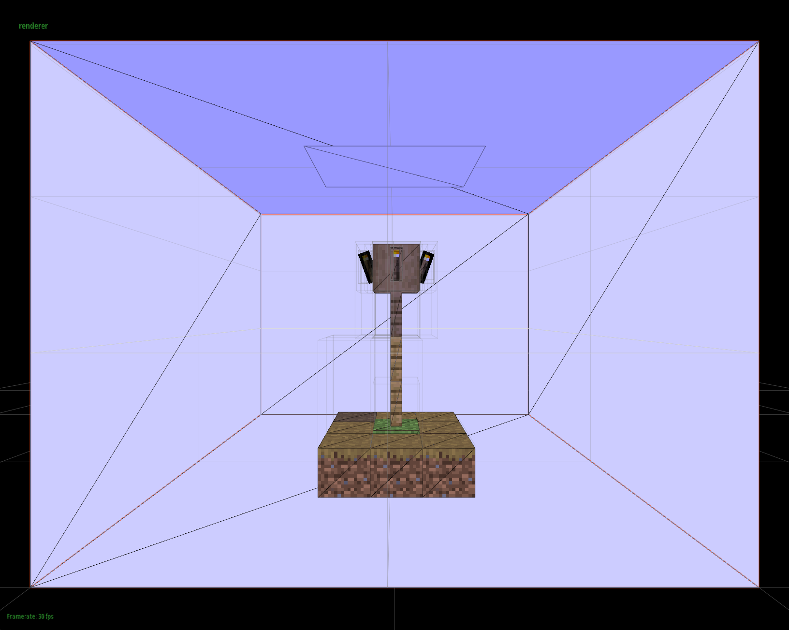

The primary goal of this project is to extend CS184's path tracer to support rendering small minecraft builds
and eventually, larger scenes. So far, we've successfuly been able to load in 3D geometry from Minecraft along
with it's base texture into the pathtracer. We've also successfully implemented UV mapping and the other bells
and whistles needed to use textures in the pathtracer. We used project 3-1 as a base, and decided to use the
Open Asset Import library assimp as our tool for importing Minecraft scenes. Refactoring the project to
be able to use this new library and the imported geometry has been a massive undertaking so far, and there is
still more to do. However, it has been quite promising so far. Additionally, we included stb_image in
order to load the textures images.
Currently we use assimp to read in all the vertices and their corresponding textures from an OBJ and MTL
file into the scene. From the vertices, we create our triangle primitives that populate the BVH. We are still
using the included COLLADA reader for lights and the camera however, but we will be scrapping that in the
future. We've also created a new class called Textured Triangle which extends the Primitive class, but
holds a texture and samples the texture at the ray-triangle intersection point.
Finally, we also did some work in Blender to create path traced renders of minecraft builds to learn more about
how textures work in path tracing and what we might expect. Here is an image we produced in Blender using the
Cycles renderer.
|  |
We are quite happy with our preliminary results, and we think the pathtraced output looks amazing! As you can see, we loaded a small minecraft build into the traditional cornell box, and got a great looking image as a result. In the future, we will be able to use larger scenes as we work on some of the project infrastructure, in particular, using a different format for our 3D scene like FBX or COLLADA with assimp. Further, this scene only uses the base minecraft texture. As stated in our proposal, we plan to include Minecraft's PBR textures as well for an even better looking result.
|  |
We also worked a bit on the OpenGL side of the pathtracer to allow us to see the Minecraft textures in the rasterized preview!
|  |
We have been able to implement much of the important functionality into the pathtracer so far. Still, we must
work on the infrastructure to support lights and the camera through one file (rather than a split COLLADA and
OBJ file), as well as the PBR effects and textures. As certain issues like importing files has proven to be a
larger challenge than expected, we don't persay plan on hitting our stretch goals. However, we are very happy
with the progress so far and believe that the final result will be quite nice.
From here the work will mainly be split into two categories: